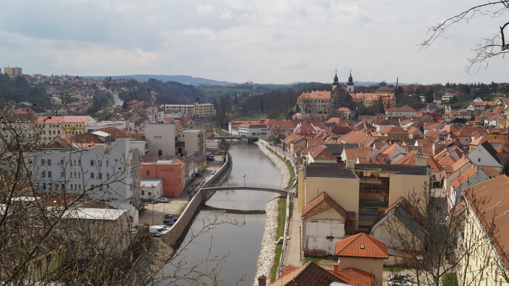
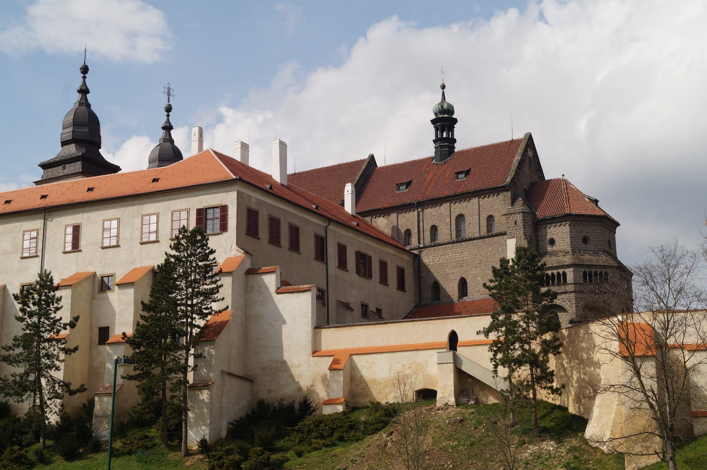

El paisaje accidentado, estanques, rocas altas, bosques intrincados, prados florecientes y tres monumentos de la UNESCO. Todo ello lo conforma la Meseta Checo-morava o Vysočina, una región dura de la que se dice desde tiempos remotos que «aquí se acaba el pan y empiezan las piedras». A pesar de ello, la Meseta Checo-morava le encantará con su belleza armónica y ambiente agradable para el descanso activo.
Rio Jihlava a su paso por la localidad de Třebíč
El centro natural de la región es Jihlava. La ciudad que debe su impresionante arquitectura a la explotación de plata, está vinculada indispensablemente con la figura de Gustav Mahler. En homenaje a este compositor famoso, quien vivió en Jihlava durante largos años, se celebra aquí un importante festival de música anual, durante todo el verano.
Basílica de San Procopio en Třebíč
La segunda ciudad en importancia de esta región es la ciudad de Třebíč. La historia de Třebíč está unida a la fundación del monasterio benedictino en el año 1101. Gracias a su ubicación a las orillas del río Jihlava y a la generosidad de los fundadores, la ciudad se convirtió pronto en un centro importante de vida religiosa y educación. Actualmente es un importante centro económico, administrativo, político y cultural del sudoeste de Moravia.